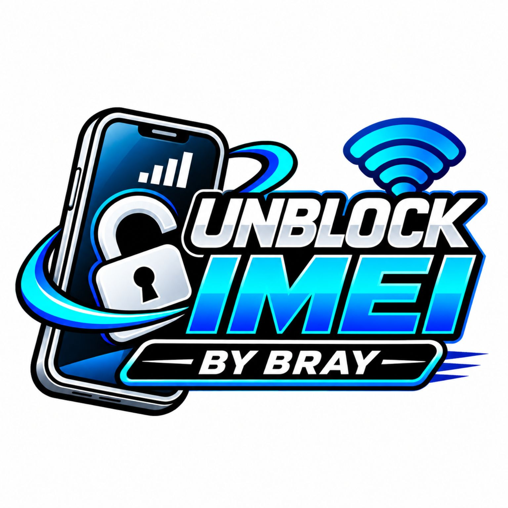

Informasi IMEI
Memahami fungsi IMEI dan informasi dasar terkait identitas perangkat seluler.
01 / INFORMATION
UNBLOCK IMEIBY BRAYTempat konsultasi dan informasi seputar kendala perangkat seluler, pemeriksaan status perangkat, serta arahan prosedur resmi yang relevan.
Kami membantu Anda memahami langkah pemeriksaan dan informasi yang relevan sebelum mengambil keputusan terkait perangkat.
Memahami fungsi IMEI dan informasi dasar terkait identitas perangkat seluler.
01 / INFORMATIONMenyampaikan gejala jaringan atau kendala perangkat untuk diarahkan ke pemeriksaan yang sesuai.
02 / CONSULTATIONInformasi awal mengenai kanal dan prosedur resmi yang relevan dengan kondisi perangkat.
03 / GUIDANCEKetersediaan tindakan atau layanan tertentu bergantung pada hasil verifikasi, prosedur resmi, dan kewenangan pihak terkait. Tidak ada jaminan hasil sebelum pemeriksaan.
Kenali proses awal sebelum melanjutkan ke pemeriksaan lebih lanjut.
Kirim pesan melalui WhatsApp dan jelaskan kebutuhan Anda.
Sampaikan merek, tipe perangkat, negara asal, dan gejala yang dialami.
Informasi akan ditinjau untuk menentukan arahan pemeriksaan yang sesuai.
Keputusan berikutnya disampaikan secara transparan berdasarkan hasil verifikasi.
Informasi awal untuk membantu Anda memulai konsultasi.
Hubungi WhatsApp resmi kami dan sampaikan merek, tipe perangkat, negara asal, serta kendala yang dialami.
Belum tentu. Kelayakan dan langkah yang dapat dilakukan harus diperiksa terlebih dahulu berdasarkan kondisi perangkat dan prosedur yang berlaku.
Tidak ada jaminan hasil sebelum pemeriksaan. Kami hanya menyampaikan informasi dan penawaran setelah persyaratan serta kewenangan terkait diverifikasi.
Tidak. Jangan pernah membagikan OTP, PIN, password, atau akses akun pribadi kepada siapa pun.
Ya. Anda dapat mengirim pesan kapan saja. Waktu respons petugas manusia mengikuti ketersediaan petugas.
Hubungi Unblock IMEI by Bray untuk menyampaikan pertanyaan dan kebutuhan konsultasi Anda.